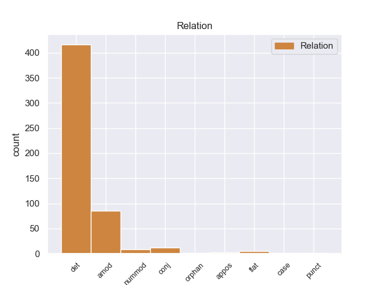
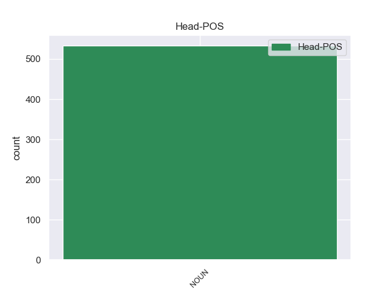
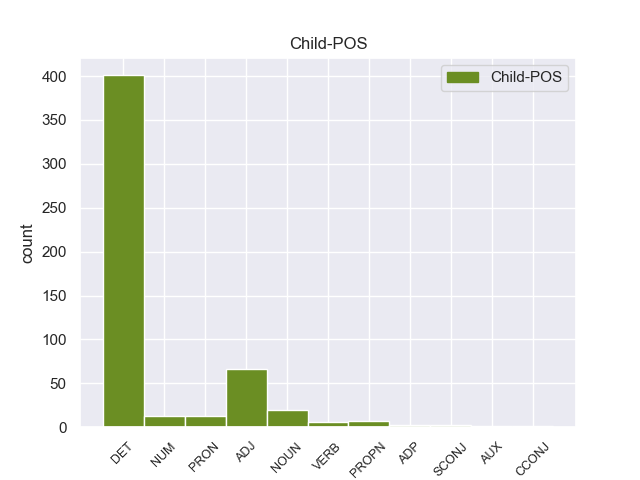

Distribution of features within this leaf



Agreement Rules sorted by frequency.
- When the dependent token is the determiner(det) of the head token, and the head token is NOUN
1 Σ _ _ _ _ 0 _ _ _
2 την _ _ _ _ 0 _ _ _
3 παρούσα _ _ _ _ 0 _ _ _
4 μορφή _ _ _ _ 0 _ _ _
5 της _ _ _ _ 0 _ _ _
6 , _ _ _ _ 0 _ _ _
7 η _ _ _ _ 0 _ _ _
8 αίτηση _ _ _ _ 0 _ _ _
9 άρσης _ _ _ _ 0 _ _ _
10 της ο DET _ Case=Gen|Definite=Def|Gender=Fem|Number=Sing|PronType=Art 11 det _ _
11 ασυλίας ασυλίας NOUN _ Case=Gen|Gender=Fem|Number=Sing 0 _ _ _
12 παρουσιάζεται _ _ _ _ 0 _ _ _
13 απαράδεκτα _ _ _ _ 0 _ _ _
14 ασαφής _ _ _ _ 0 _ _ _
15 . _ _ _ _ 0 _ _ _
1 Τα _ _ _ _ 0 _ _ _
2 Σύβοτα _ _ _ _ 0 _ _ _
3 είναι _ _ _ _ 0 _ _ _
4 ένας _ _ _ _ 0 _ _ _
5 παραθαλάσσιος παραθαλάσσιος ADJ _ Case=Acc|Gender=Fem|Number=Sing 10 amod _ _
6 οικισμός _ _ _ _ 0 _ _ _
7 σ _ _ _ _ 0 _ _ _
8 το _ _ _ _ 0 _ _ _
9 νότιο _ _ _ _ 0 _ _ _
10 άκρο ο NOUN _ Case=Acc|Gender=Fem|Number=Sing 0 _ _ _
11 του _ _ _ _ 0 _ _ _
12 Ν. _ _ _ _ 0 _ _ _
13 Θεσπρωτίας _ _ _ _ 0 _ _ _
14 χτισμένα _ _ _ _ 0 _ _ _
15 σε _ _ _ _ 0 _ _ _
16 έναν _ _ _ _ 0 _ _ _
17 μικρό _ _ _ _ 0 _ _ _
18 , _ _ _ _ 0 _ _ _
19 κλειστό _ _ _ _ 0 _ _ _
20 κόλπο _ _ _ _ 0 _ _ _
21 . _ _ _ _ 0 _ _ _
1 Όπως _ _ _ _ 0 _ _ _
2 αναφέρει _ _ _ _ 0 _ _ _
3 η _ _ _ _ 0 _ _ _
4 Εθνική _ _ _ _ 0 _ _ _
5 Μετεωρολογική _ _ _ _ 0 _ _ _
6 Υπηρεσία υπηρεσία NOUN _ Case=Gen|Gender=Fem|Number=Sing 0 _ _ _
7 , _ _ _ _ 0 _ _ _
8 οι _ _ _ _ 0 _ _ _
9 Πολιτείες _ _ _ _ 0 _ _ _
10 Μισισιπή μισισιπή NOUN _ Case=Gen|Gender=Fem|Number=Sing 6 conj _ _
11 , _ _ _ _ 0 _ _ _
12 Αλαμπάμα _ _ _ _ 0 _ _ _
13 και _ _ _ _ 0 _ _ _
14 Λουιζιάνα _ _ _ _ 0 _ _ _
15 που _ _ _ _ 0 _ _ _
16 βρίσκονται _ _ _ _ 0 _ _ _
17 σ _ _ _ _ 0 _ _ _
18 τον _ _ _ _ 0 _ _ _
19 Κόλπο _ _ _ _ 0 _ _ _
20 του _ _ _ _ 0 _ _ _
21 Μεξικού _ _ _ _ 0 _ _ _
22 , _ _ _ _ 0 _ _ _
23 παραμένουν _ _ _ _ 0 _ _ _
24 υπό _ _ _ _ 0 _ _ _
25 την _ _ _ _ 0 _ _ _
26 απειλή _ _ _ _ 0 _ _ _
27 ανεμοστρόβιλων _ _ _ _ 0 _ _ _
28 , _ _ _ _ 0 _ _ _
29 ισχυρών _ _ _ _ 0 _ _ _
30 ανέμων _ _ _ _ 0 _ _ _
31 και _ _ _ _ 0 _ _ _
32 έντονης _ _ _ _ 0 _ _ _
33 χαλαζόπτωσης _ _ _ _ 0 _ _ _
34 . _ _ _ _ 0 _ _ _
1 Τέλος _ _ _ _ 0 _ _ _
2 , _ _ _ _ 0 _ _ _
3 σχετικά _ _ _ _ 0 _ _ _
4 με _ _ _ _ 0 _ _ _
5 τα _ _ _ _ 0 _ _ _
6 δύο δύο NUM NUM Case=Acc|Gender=Neut|Number=Plur|NumType=Card 7 nummod _ _
7 θέματα θέμα NOUN NOUN Case=Acc|Gender=Neut|Number=Plur 0 _ _ _
8 που _ _ _ _ 0 _ _ _
9 δεν _ _ _ _ 0 _ _ _
10 αφορούν _ _ _ _ 0 _ _ _
11 τον _ _ _ _ 0 _ _ _
12 ανταγωνισμό _ _ _ _ 0 _ _ _
13 , _ _ _ _ 0 _ _ _
14 αλλά _ _ _ _ 0 _ _ _
15 έχουν _ _ _ _ 0 _ _ _
16 κάποια _ _ _ _ 0 _ _ _
17 σχέση _ _ _ _ 0 _ _ _
18 με _ _ _ _ 0 _ _ _
19 τις _ _ _ _ 0 _ _ _
20 τιμές _ _ _ _ 0 _ _ _
21 , _ _ _ _ 0 _ _ _
22 τη _ _ _ _ 0 _ _ _
23 φορολογία _ _ _ _ 0 _ _ _
24 και _ _ _ _ 0 _ _ _
25 το _ _ _ _ 0 _ _ _
26 ευρώ _ _ _ _ 0 _ _ _
27 , _ _ _ _ 0 _ _ _
28 δεν _ _ _ _ 0 _ _ _
29 θα _ _ _ _ 0 _ _ _
30 επεκταθώ _ _ _ _ 0 _ _ _
31 πέραν _ _ _ _ 0 _ _ _
32 της _ _ _ _ 0 _ _ _
33 απάντησης _ _ _ _ 0 _ _ _
34 που _ _ _ _ 0 _ _ _
35 έδωσα _ _ _ _ 0 _ _ _
36 σχετικά _ _ _ _ 0 _ _ _
37 με _ _ _ _ 0 _ _ _
38 το _ _ _ _ 0 _ _ _
39 ζήτημα _ _ _ _ 0 _ _ _
40 του _ _ _ _ 0 _ _ _
41 ΗΒ _ _ _ _ 0 _ _ _
42 , _ _ _ _ 0 _ _ _
43 τα _ _ _ _ 0 _ _ _
44 αυτοκίνητα _ _ _ _ 0 _ _ _
45 και _ _ _ _ 0 _ _ _
46 το _ _ _ _ 0 _ _ _
47 ευρώ _ _ _ _ 0 _ _ _
48 . _ _ _ _ 0 _ _ _
1 Την _ _ _ _ 0 _ _ _
2 μεθεπομένη _ _ _ _ 0 _ _ _
3 σχημάτισε _ _ _ _ 0 _ _ _
4 κυβέρνηση _ _ _ _ 0 _ _ _
5 ο _ _ _ _ 0 _ _ _
6 Δημήτριος _ _ _ _ 0 _ _ _
7 Ράλλης _ _ _ _ 0 _ _ _
8 , _ _ _ _ 0 _ _ _
9 παραιτήθηκε _ _ _ _ 0 _ _ _
10 ο _ _ _ _ 0 _ _ _
11 Κουντουριώτης _ _ _ _ 0 _ _ _
12 κι _ _ _ _ 0 _ _ _
13 έγινε _ _ _ _ 0 _ _ _
14 αντιβασίλισσα _ _ _ _ 0 _ _ _
15 η _ _ _ _ 0 _ _ _
16 βασιλομήτωρ βασιλομήτωρ NOUN NOUN Case=Nom|Gender=Fem|Number=Sing 0 _ _ _
17 Όλγα Όλγα PROPN PROPN Case=Nom|Gender=Fem|Number=Sing 16 flat _ _
18 μέχρι _ _ _ _ 0 _ _ _
19 να _ _ _ _ 0 _ _ _
20 γίνει _ _ _ _ 0 _ _ _
21 δημοψήφισμα _ _ _ _ 0 _ _ _
22 , _ _ _ _ 0 _ _ _
23 το _ _ _ _ 0 _ _ _
24 οποίο _ _ _ _ 0 _ _ _
25 θα _ _ _ _ 0 _ _ _
26 επανέφερε _ _ _ _ 0 _ _ _
27 τον _ _ _ _ 0 _ _ _
28 εξόριστο _ _ _ _ 0 _ _ _
29 Κωνσταντίνο _ _ _ _ 0 _ _ _
30 . _ _ _ _ 0 _ _ _
1 Το _ _ _ _ 0 _ _ _
2 ταπεινό _ _ _ _ 0 _ _ _
3 τέμενος _ _ _ _ 0 _ _ _
4 δεν _ _ _ _ 0 _ _ _
5 συγκρίνεται _ _ _ _ 0 _ _ _
6 με _ _ _ _ 0 _ _ _
7 το _ _ _ _ 0 _ _ _
8 παλάτι παλάτι NOUN NOUN Case=Acc|Gender=Neut|Number=Sing 0 _ _ _
9 του _ _ _ _ 0 _ _ _
10 Μπαχτσισαράι _ _ _ _ 0 _ _ _
11 , _ _ _ _ 0 _ _ _
12 την _ _ _ _ 0 _ _ _
13 έδρα έδρα NOUN NOUN Case=Acc|Gender=Fem|Number=Sing 8 appos _ _
14 του _ _ _ _ 0 _ _ _
15 Κριμαϊκού _ _ _ _ 0 _ _ _
16 Χανάτου _ _ _ _ 0 _ _ _
17 , _ _ _ _ 0 _ _ _
18 το _ _ _ _ 0 _ _ _
19 οποίο _ _ _ _ 0 _ _ _
20 αποθανάτισε _ _ _ _ 0 _ _ _
21 σ _ _ _ _ 0 _ _ _
22 την _ _ _ _ 0 _ _ _
23 ποίησή _ _ _ _ 0 _ _ _
24 του _ _ _ _ 0 _ _ _
25 ο _ _ _ _ 0 _ _ _
26 Αλεξάντερ _ _ _ _ 0 _ _ _
27 Πούσκιν _ _ _ _ 0 _ _ _
28 , _ _ _ _ 0 _ _ _
29 και _ _ _ _ 0 _ _ _
30 το _ _ _ _ 0 _ _ _
31 οποίο _ _ _ _ 0 _ _ _
32 έπεσε _ _ _ _ 0 _ _ _
33 σ _ _ _ _ 0 _ _ _
34 τα _ _ _ _ 0 _ _ _
35 χέρια _ _ _ _ 0 _ _ _
36 της _ _ _ _ 0 _ _ _
37 αυτοκρατορικής _ _ _ _ 0 _ _ _
38 Ρωσίας _ _ _ _ 0 _ _ _
39 το _ _ _ _ 0 _ _ _
40 18ο _ _ _ _ 0 _ _ _
41 αιώνα _ _ _ _ 0 _ _ _
42 . _ _ _ _ 0 _ _ _
1 Μόλις _ _ _ _ 0 _ _ _
2 πριν _ _ _ _ 0 _ _ _
3 από _ _ _ _ 0 _ _ _
4 μερικές μερικές VERB _ Case=Acc|Gender=Fem|Number=Sing 5 case _ _
5 εβδομάδες εβδομάδες NOUN _ Case=Acc|Gender=Fem|Number=Sing 0 _ _ _
6 , _ _ _ _ 0 _ _ _
7 επιστήμονες _ _ _ _ 0 _ _ _
8 από _ _ _ _ 0 _ _ _
9 την _ _ _ _ 0 _ _ _
10 Καλιφόρνια _ _ _ _ 0 _ _ _
11 δημοσιοποίησαν _ _ _ _ 0 _ _ _
12 στοιχεία _ _ _ _ 0 _ _ _
13 σύμφωνα _ _ _ _ 0 _ _ _
14 με _ _ _ _ 0 _ _ _
15 τα _ _ _ _ 0 _ _ _
16 οποία _ _ _ _ 0 _ _ _
17 τα _ _ _ _ 0 _ _ _
18 καυσαέρια _ _ _ _ 0 _ _ _
19 των _ _ _ _ 0 _ _ _
20 αυτοκινήτων _ _ _ _ 0 _ _ _
21 μπορούν _ _ _ _ 0 _ _ _
22 πράγματι _ _ _ _ 0 _ _ _
23 να _ _ _ _ 0 _ _ _
24 προκαλέσουν _ _ _ _ 0 _ _ _
25 άσθμα _ _ _ _ 0 _ _ _
26 , _ _ _ _ 0 _ _ _
27 και _ _ _ _ 0 _ _ _
28 όχι _ _ _ _ 0 _ _ _
29 απλώς _ _ _ _ 0 _ _ _
30 να _ _ _ _ 0 _ _ _
31 επιδεινώσουν _ _ _ _ 0 _ _ _
32 την _ _ _ _ 0 _ _ _
33 κατάσταση _ _ _ _ 0 _ _ _
34 των _ _ _ _ 0 _ _ _
35 ήδη _ _ _ _ 0 _ _ _
36 πασχόντων _ _ _ _ 0 _ _ _
37 . _ _ _ _ 0 _ _ _
1 Κάθε _ _ _ _ 0 _ _ _
2 οδηγία _ _ _ _ 0 _ _ _
3 , _ _ _ _ 0 _ _ _
4 όσο _ _ _ _ 0 _ _ _
5 καλή _ _ _ _ 0 _ _ _
6 κι _ _ _ _ 0 _ _ _
7 αν _ _ _ _ 0 _ _ _
8 είναι _ _ _ _ 0 _ _ _
9 , _ _ _ _ 0 _ _ _
10 έχει _ _ _ _ 0 _ _ _
11 αξία _ _ _ _ 0 _ _ _
12 μόνο _ _ _ _ 0 _ _ _
13 εάν _ _ _ _ 0 _ _ _
14 ελέγχεται _ _ _ _ 0 _ _ _
15 σε _ _ _ _ 0 _ _ _
16 τακτά _ _ _ _ 0 _ _ _
17 διαστήματα _ _ _ _ 0 _ _ _
18 η _ _ _ _ 0 _ _ _
19 εφαρμογή _ _ _ _ 0 _ _ _
20 της _ _ _ _ 0 _ _ _
21 , _ _ _ _ 0 _ _ _
22 και _ _ _ _ 0 _ _ _
23 μάλιστα _ _ _ _ 0 _ _ _
24 με _ _ _ _ 0 _ _ _
25 τον _ _ _ _ 0 _ _ _
26 ίδιο _ _ _ _ 0 _ _ _
27 τρόπο τρόπος NOUN NOUN Case=Acc|Gender=Masc|Number=Sing 0 _ _ _
28 σε _ _ _ _ 0 _ _ _
29 όλα _ _ _ _ 0 _ _ _
30 τα _ _ _ _ 0 _ _ _
31 κράτη κράτος NOUN NOUN Case=Acc|Gender=Neut|Number=Plur 27 orphan _ _
32 μέλη _ _ _ _ 0 _ _ _
33 . _ _ _ _ 0 _ _ _
Disagree Examples:
1 Ο _ _ _ _ 0 _ _ _
2 Τζων _ _ _ _ 0 _ _ _
3 Ντέμιαντσουκ _ _ _ _ 0 _ _ _
4 είχε _ _ _ _ 0 _ _ _
5 πιαστεί _ _ _ _ 0 _ _ _
6 αιχμάλωτος _ _ _ _ 0 _ _ _
7 από _ _ _ _ 0 _ _ _
8 τους _ _ _ _ 0 _ _ _
9 Γερμανούς _ _ _ _ 0 _ _ _
10 κατά _ _ _ _ 0 _ _ _
11 τον _ _ _ _ 0 _ _ _
12 Β' Β' NUM NUM Case=Nom|Gender=Neut|Number=Sing|NumType=Ord 14 amod _ _
13 Παγκόσμιο _ _ _ _ 0 _ _ _
14 Πόλεμο πόλεμος NOUN NOUN Case=Acc|Gender=Masc|Number=Sing 0 _ _ _
15 και _ _ _ _ 0 _ _ _
16 δέχτηκε _ _ _ _ 0 _ _ _
17 να _ _ _ _ 0 _ _ _
18 βοηθήσει _ _ _ _ 0 _ _ _
19 ως _ _ _ _ 0 _ _ _
20 δεσμοφύλακας _ _ _ _ 0 _ _ _
21 σ _ _ _ _ 0 _ _ _
22 το _ _ _ _ 0 _ _ _
23 στρατόπεδο _ _ _ _ 0 _ _ _
24 συγκέντρωσης _ _ _ _ 0 _ _ _
25 του _ _ _ _ 0 _ _ _
26 Σομπιμπόρ _ _ _ _ 0 _ _ _
27 . _ _ _ _ 0 _ _ _
1 Σ _ _ _ _ 0 _ _ _
2 την _ _ _ _ 0 _ _ _
3 Αλγερία _ _ _ _ 0 _ _ _
4 , _ _ _ _ 0 _ _ _
5 ένοπλοι _ _ _ _ 0 _ _ _
6 Ισλαμιστές _ _ _ _ 0 _ _ _
7 που _ _ _ _ 0 _ _ _
8 συνδέονται _ _ _ _ 0 _ _ _
9 με _ _ _ _ 0 _ _ _
10 την _ _ _ _ 0 _ _ _
11 Αλ _ _ _ _ 0 _ _ _
12 Κάιντα _ _ _ _ 0 _ _ _
13 , _ _ _ _ 0 _ _ _
14 απήγαγαν _ _ _ _ 0 _ _ _
15 41 _ _ _ _ 0 _ _ _
16 άτομα _ _ _ _ 0 _ _ _
17 που _ _ _ _ 0 _ _ _
18 εργάζονταν _ _ _ _ 0 _ _ _
19 σε _ _ _ _ 0 _ _ _
20 εργοστασιακό _ _ _ _ 0 _ _ _
21 συγκρότημα συγκρότημα NOUN NOUN Case=Acc|Gender=Neut|Number=Sing 0 _ _ _
22 φυσικού _ _ _ _ 0 _ _ _
23 αερίου αέριος ADJ ADJ Case=Gen|Gender=Masc|Number=Sing 21 amod _ _
24 σ _ _ _ _ 0 _ _ _
25 την _ _ _ _ 0 _ _ _
26 περιοχή _ _ _ _ 0 _ _ _
27 ως _ _ _ _ 0 _ _ _
28 απάντηση _ _ _ _ 0 _ _ _
29 σ _ _ _ _ 0 _ _ _
30 τις _ _ _ _ 0 _ _ _
31 στρατιωτικές _ _ _ _ 0 _ _ _
32 επιχειρήσεις _ _ _ _ 0 _ _ _
33 που _ _ _ _ 0 _ _ _
34 πραγματοποιεί _ _ _ _ 0 _ _ _
35 η _ _ _ _ 0 _ _ _
36 Γαλλία _ _ _ _ 0 _ _ _
37 σ _ _ _ _ 0 _ _ _
38 το _ _ _ _ 0 _ _ _
39 Μάλι _ _ _ _ 0 _ _ _
40 . _ _ _ _ 0 _ _ _
1 Η _ _ _ _ 0 _ _ _
2 σημαντικότητα _ _ _ _ 0 _ _ _
3 του _ _ _ _ 0 _ _ _
4 Αχέροντα _ _ _ _ 0 _ _ _
5 ήταν _ _ _ _ 0 _ _ _
6 μεγάλη _ _ _ _ 0 _ _ _
7 κατά _ _ _ _ 0 _ _ _
8 την _ _ _ _ 0 _ _ _
9 αρχαιότητα _ _ _ _ 0 _ _ _
10 , _ _ _ _ 0 _ _ _
11 οπότε _ _ _ _ 0 _ _ _
12 και _ _ _ _ 0 _ _ _
13 ιδρύθηκε _ _ _ _ 0 _ _ _
14 σ _ _ _ _ 0 _ _ _
15 την _ _ _ _ 0 _ _ _
16 βορειοανατολική βορειοανατολική NOUN _ Case=Gen|Gender=Fem|Number=Sing 17 det _ _
17 όχθη όχθη NOUN _ Case=Acc|Gender=Fem|Number=Sing 0 _ _ _
18 της _ _ _ _ 0 _ _ _
19 Αχερουσίας _ _ _ _ 0 _ _ _
20 το _ _ _ _ 0 _ _ _
21 Νεκρομαντείο _ _ _ _ 0 _ _ _
22 , _ _ _ _ 0 _ _ _
23 ο _ _ _ _ 0 _ _ _
24 σημαντικότερος _ _ _ _ 0 _ _ _
25 τόπος _ _ _ _ 0 _ _ _
26 επικοινωνίας _ _ _ _ 0 _ _ _
27 με _ _ _ _ 0 _ _ _
28 τους _ _ _ _ 0 _ _ _
29 νεκρούς _ _ _ _ 0 _ _ _
30 και _ _ _ _ 0 _ _ _
31 λατρείας _ _ _ _ 0 _ _ _
32 των _ _ _ _ 0 _ _ _
33 θεών _ _ _ _ 0 _ _ _
34 του _ _ _ _ 0 _ _ _
35 Κάτω _ _ _ _ 0 _ _ _
36 Κόσμου _ _ _ _ 0 _ _ _
37 . _ _ _ _ 0 _ _ _
1 Σ _ _ _ _ 0 _ _ _
2 το ο DET _ Case=Acc|Gender=Fem|Number=Sing 3 det _ _
3 Ιράκ ιράκ NOUN _ Case=Gen|Gender=Fem|Number=Sing 0 _ _ _
4 , _ _ _ _ 0 _ _ _
5 κατά _ _ _ _ 0 _ _ _
6 τη _ _ _ _ 0 _ _ _
7 διάρκεια _ _ _ _ 0 _ _ _
8 συγκρούσεων _ _ _ _ 0 _ _ _
9 μεταξύ _ _ _ _ 0 _ _ _
10 διαδηλωτών _ _ _ _ 0 _ _ _
11 ( _ _ _ _ 0 _ _ _
12 μέλη _ _ _ _ 0 _ _ _
13 της _ _ _ _ 0 _ _ _
14 σουνιτικής _ _ _ _ 0 _ _ _
15 μειονότητας _ _ _ _ 0 _ _ _
16 του _ _ _ _ 0 _ _ _
17 Ιράκ _ _ _ _ 0 _ _ _
18 ) _ _ _ _ 0 _ _ _
19 και _ _ _ _ 0 _ _ _
20 στρατιωτών _ _ _ _ 0 _ _ _
21 , _ _ _ _ 0 _ _ _
22 πέντε _ _ _ _ 0 _ _ _
23 άτομα _ _ _ _ 0 _ _ _
24 έχασαν _ _ _ _ 0 _ _ _
25 τη _ _ _ _ 0 _ _ _
26 ζωή _ _ _ _ 0 _ _ _
27 τους _ _ _ _ 0 _ _ _
28 , _ _ _ _ 0 _ _ _
29 ενώ _ _ _ _ 0 _ _ _
30 άλλα _ _ _ _ 0 _ _ _
31 20 _ _ _ _ 0 _ _ _
32 σκοτώθηκαν _ _ _ _ 0 _ _ _
33 . _ _ _ _ 0 _ _ _
1 Αυτά _ _ _ _ 0 _ _ _
2 τα _ _ _ _ 0 _ _ _
3 ποσοστά _ _ _ _ 0 _ _ _
4 είναι _ _ _ _ 0 _ _ _
5 τα _ _ _ _ 0 _ _ _
6 πιο _ _ _ _ 0 _ _ _
7 χαμηλά _ _ _ _ 0 _ _ _
8 από _ _ _ _ 0 _ _ _
9 τότε _ _ _ _ 0 _ _ _
10 που _ _ _ _ 0 _ _ _
11 το _ _ _ _ 0 _ _ _
12 IFOP ifop DET _ Case=Gen|Gender=Fem|Number=Sing 20 det _ _
13 ξεκίνησε _ _ _ _ 0 _ _ _
14 δημοσκοπήσεις _ _ _ _ 0 _ _ _
15 σ _ _ _ _ 0 _ _ _
16 τη _ _ _ _ 0 _ _ _
17 Γαλλία _ _ _ _ 0 _ _ _
18 μετά _ _ _ _ 0 _ _ _
19 τα _ _ _ _ 0 _ _ _
20 γεγονότα γεγονότα NOUN _ Case=Acc|Gender=Fem|Number=Sing 0 _ _ _
21 της _ _ _ _ 0 _ _ _
22 11ης _ _ _ _ 0 _ _ _
23 Σεπτεμβρίου _ _ _ _ 0 _ _ _
24 2001 _ _ _ _ 0 _ _ _
25 . _ _ _ _ 0 _ _ _